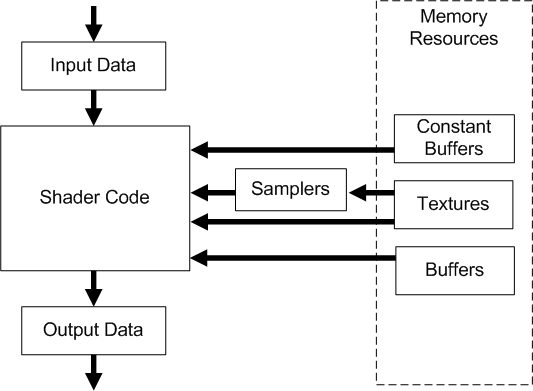

title: Common-Shader Core description: Common-Shader Core ms.assetid: f3cf2969-83a4-461f-8177-d336536194ba ms.topic: article ms.date: 05/31/2018 topic_type:
In Shader Model 4, all shader stages implement the same base functionality using a common-shader core. In addition, each of the three shader stages (vertex, geometry, and pixel) offer functionality unique to each stage, such as the ability to generate new primitives from the geometry shader stage or to discard a specific pixel in the pixel shader stage. The following diagram shows how data flows through a shader stage, and the relationship of the common-shader core with shader memory resources.

Differences between Direct3D 9 and Direct3D 10:
The common shader core provides a full set of IEEE-compliant 32-bit integer and bitwise operations. These operations enable a new class of algorithms in graphics hardware examples include compression and packing techniques, FFTs, and bitfield program-flow control.
The int and uint data types in Direct3D 10 HLSL map to 32-bit integers in hardware.
| Differences between Direct3D 9 and Direct3D 10: In Direct3D 9 stream inputs marked as integer in HLSL were interpreted as floating-point. In Direct3D 10, stream inputs marked as integer are interpreted as a 32- bit integer. In addition, boolean values are now all bits set or all bits unset. Data converted to bool will be interpreted as true if the value is not equal to 0.0f (both positive and negative zero are allowed to be false) and false otherwise. |
The common shader core supports the following bitwise operators:
| Operator | Function |
|---|---|
| ~ | Logical Not |
| << | Left Shift |
| >> | Right Shift |
| & | Logical And |
| | | Logical Or |
| ^ | Logical Xor |
| <<= | Left shift Equal |
| >>= | Right Shift Equal |
| &= | And Equal |
| |= | Or Equal |
| ^= | Xor Equal |
Bitwise operators are defined to operate only on int and uint data types. Attempting to use bitwise operators on float or struct data types will result in an error. Bitwise operators follow the same precedence as C with regard to other operators.
Casting between an integer and a floating-point type will convert the numeric value following C truncation rules. Casting a value from a float, to an int, and back to a float is a lossy conversion dependent on the precision of the target data type. Here are some of the conversion functions: asfloat (DirectX HLSL), asint (DirectX HLSL), asuint (DirectX HLSL).
Binary casts can also be performed using HLSL intrinsic functions. These cause the compiler to reinterpret the bit representation of a number into the target data type.